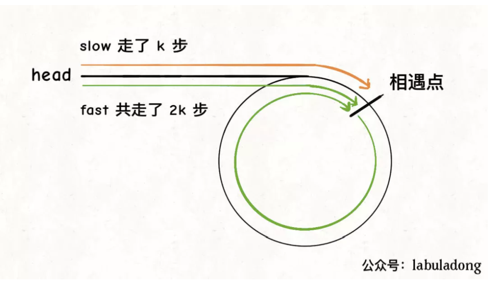
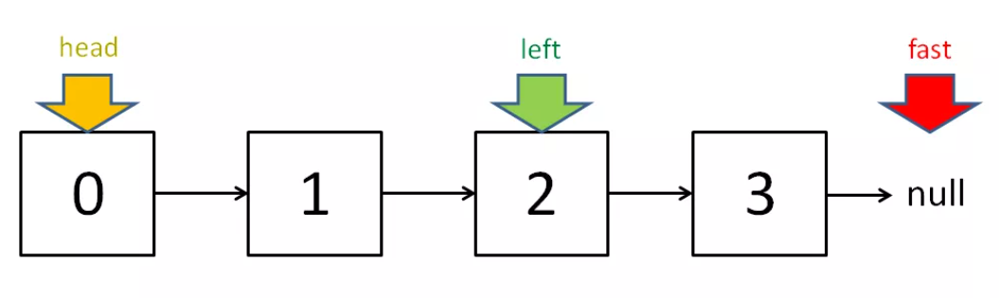

双指针技巧可分为两类，一类是「快慢指针」，一类是「左右指针」。前者解决主要解决链表中的问题，比如典型的判定链表中是否包含环；后者主要解决数组（或者字符串）中的问题，比如二分查找。
快慢指针
判定链表中是否含有环
经典解法就是用两个指针，一个跑得快，一个跑得慢。如果不含有环，跑得快的那个指针最终会遇到null，说明链表不含环；如果含有环，快指针最终会超慢指针一圈，和慢指针相遇，说明链表含有环。
boolean hasCycle(ListNode head) {
ListNode fast, slow;
fast = slow = head;
while (fast != null && fast.next != null) {
fast = fast.next.next;
slow = slow.next;
if (fast == slow) return true;
}
return false;
}
bool hasCycle(ListNode* head) {
ListNode* fast = head;
ListNode* slow = head;
while (fast != nullptr && fast->next != nullptr) {
fast = fast->next->next;
slow = slow->next;
if (fast == slow) // 有环
return true;
}
return false;
}已知链表中含有环，返回这个环的起始位置
当快慢指针相遇时，让其中任一个指针指向头节点，然后让它俩以相同速度前进，再次相遇时所在的节点位置就是环开始的位置。
第一次相遇时，假设慢指针slow走了k步，那么快指针fast一定走了2k步, fast一定比slow多走了k步，这多走的k步其实就是fast指针在环里转圈圈，所以k的值就是环长度的整数倍。
设相遇点距环的起点的距离为m，那么环的起点距头结点head的距离为k - m，也就是说如果从head前进k - m步就能到达环起点。同时从相遇点继续前进k - m步，也恰好到达环起点。

只要我们把快慢指针中的任一个重新指向head，然后两个指针同速前进，k - m步后就会相遇，相遇之处就是环的起点了。
ListNode* detectCycle(ListNode* head) {
ListNode* fast, slow;
fast = slow = head;
while (fast != nullptr && fast->next != nullptr) {
fast = fast->next->next;
slow = slow->next;
if (fast == slow) break; // 到达相遇点
}
// 上面的代码类似 hasCycle 函数
slow = head;
while (slow != fast) {
fast = fast->next;
slow = slow->next;
}
return slow;
}寻找链表的中点
让快指针一次前进两步，慢指针一次前进一步，当快指针到达链表尽头时，慢指针就处于链表的中间位置。
当链表的长度是奇数时，slow恰巧停在中点位置；如果长度是偶数，slow最终的位置是中间偏右。

ListNode* middleNode(ListNode* head) {
ListNode* fast, slow;
fast = slow = head;
while (fast != nullptr && fast->next != nullptr) {
fast = fast->next->next;
slow = slow->next;
}
// slow 就在中间位置
return slow;
}寻找链表的倒数第n个元素
给定一个链表，删除链表的倒数第n个元素。
思路是使用快慢指针，让快指针先走n步，然后快慢指针开始同速前进。这样当快指针走到链表末尾null时，慢指针所在的位置就是倒数第n个链表节点（n不会超过链表长度）。
左右指针
二分查找
int binarySearch(vector<int>& nums, int target) {
int left = 0;
int right = nums.size() - 1;
while(left <= right) {
int mid = (right + left) / 2;
if(nums[mid] == target)
return mid;
else if (nums[mid] < target)
left = mid + 1;
else if (nums[mid] > target)
right = mid - 1;
}
return -1;
}反转数组
void reverseString(vector<char> arr) {
int left = 0;
int right = arr.size() - 1;
while (left < right) {
// 交换 arr[left] 和 arr[right]
char temp = arr[left];
arr[left] = arr[right];
arr[right] = temp;
left++; right--;
}
}滑动窗口
滑动窗口一般先right指针扩大窗口, 然后left缩小窗口。需要明确扩大或缩小窗口时的条件, 数据的更新。
具体的
当移动right扩大窗口，即加入字符时，应该更新哪些数据？
什么条件下，窗口应该暂停扩大，开始移动left缩小窗口？
当移动left缩小窗口，即移出字符时，应该更新哪些数据？
我们要的结果应该在扩大窗口时还是缩小窗口时进行更新？
例题
给你一个字符串 s 、一个字符串 t 。返回 s 中涵盖 t 所有字符的最小子串。如果 s 中不存在涵盖 t 所有字符的子串，则返回空字符串 “” 。
思路,
- 将需要匹配的字符串t的字符, 统计到need map中
- 先右移动窗口, 移动时更新window和valid
- 窗口右移完毕左窗口收缩条件, valid == need.size()
- 更新此时最小字串起始终止位置索引
- 左移窗口,更新数据, window和valid
valid表示滑动窗口中已经满足T中字符的个数。
windows表示, 滑动窗口满足T中字符的map计数
string minWindow(string s, string t) {
unordered_map<char, int> need, window;
// need 需要匹配的字符
for (char c : t) need[c]++;
int left = 0, right = 0;
int valid = 0;
// 记录最小覆盖子串的起始索引及长度
int start = 0, len = INT_MAX;
while (right < s.size()) {
// c 是将移入窗口的字符
char c = s[right];
// 右移窗口
right++;
// 进行窗口内数据的一系列更新
if (need.count(c)) {
window[c]++;
if (window[c] == need[c])
valid++;
}
// 判断左侧窗口是否要收缩
while (valid == need.size()) {
// 在这里更新最小覆盖子串
if (right - left < len) {
start = left;
len = right - left;
}
// d 是将移出窗口的字符
char d = s[left];
// 左移窗口
left++;
// 进行窗口内数据的一系列更新
if (need.count(d)) {
if (window[d] == need[d])
valid--;
window[d]--;
}
}
}
// 返回最小覆盖子串
return len == INT_MAX ?
"" : s.substr(start, len);
}该题要求返回包含字符串的最小字串, 未强制长度。如果要求返回长度为n的字串, 滑动窗口左侧收缩的条件应该变为while (right - left >= n)
/// 长度要求，更新左侧窗口
while (right - left >= t.size()) {
// 在这里判断是否找到了合法的子串
if (valid == need.size())
return true;
char d = s[left];
left++;
// 进行窗口内数据的一系列更新
if (need.count(d)) {
if (window[d] == need[d])
valid--;
window[d]--;
}
}给定两个字符串 s 和 p，找到 s 中所有 p 的 异位词 的子串，返回这些子串的起始索引。不考虑答案输出的顺序。
异位词 指字母相同，但排列不同的字符串。
输入: s = "cbaebabacd", p = "abc"
输出: [0,6]
解释:
起始索引等于 0 的子串是 "cba", 它是 "abc" 的异位词。
起始索引等于 6 的子串是 "bac", 它是 "abc" 的异位词。代码
vector<int> findAnagrams(string s, string t) {
unordered_map<char, int> need, window;
for (char c : t) need[c]++;
int left = 0, right = 0;
int valid = 0;
vector<int> res; // 记录结果
while (right < s.size()) {
char c = s[right];
right++;
// 进行窗口内数据的一系列更新
if (need.count(c)) {
window[c]++;
if (window[c] == need[c])
valid++;
}
// 判断左侧窗口是否要收缩
/// 字母异位词显然要求长度一样
while (right - left >= t.size()) {
// 当窗口符合条件时，把起始索引加入 res
if (valid == need.size())
res.push_back(left);
char d = s[left];
left++;
// 进行窗口内数据的一系列更新
if (need.count(d)) {
if (window[d] == need[d])
valid--;
window[d]--;
}
}
}
return res;
}给定一个字符串 s ，请你找出其中不含有重复字符的 最长子串 的长度。
当window[c]值大于 1 时，说明窗口中存在重复字符，不符合条件，就该移动left缩小窗口
int lengthOfLongestSubstring(string s) {
unordered_map<char, int> window;
int left = 0, right = 0;
int res = 0; // 记录结果
while (right < s.size()) {
char c = s[right];
right++;
// 进行窗口内数据的一系列更新
window[c]++;
// 判断左侧窗口是否要收缩
while (window[c] > 1) {
char d = s[left];
left++;
// 进行窗口内数据的一系列更新
window[d]--;
}
// 在这里更新答案
res = max(res, right - left);
}
return res;
}